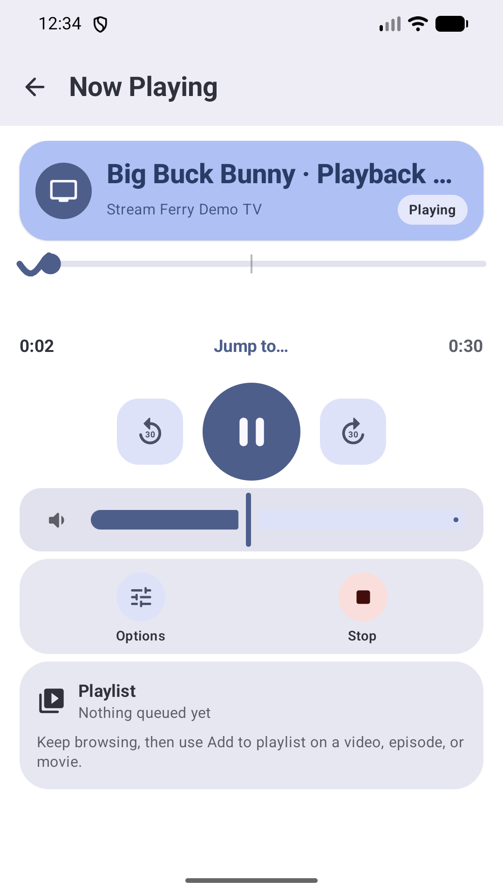
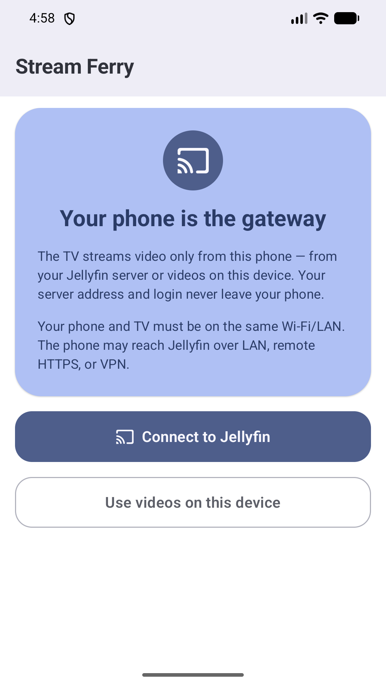
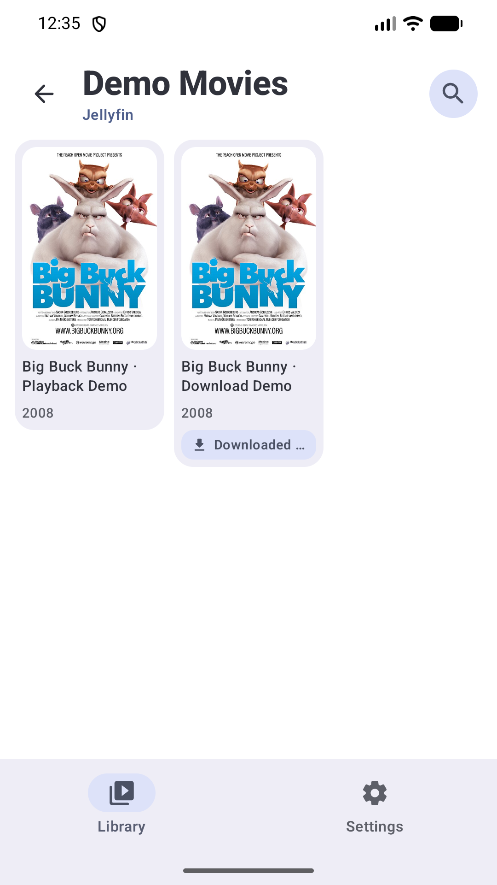
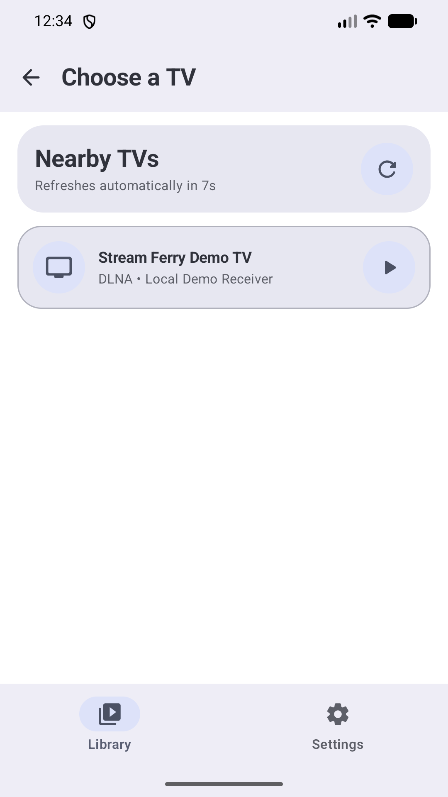
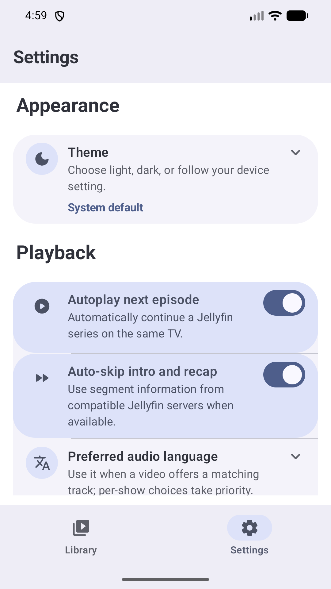
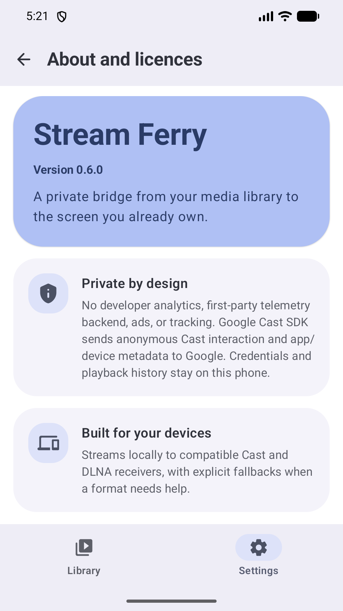
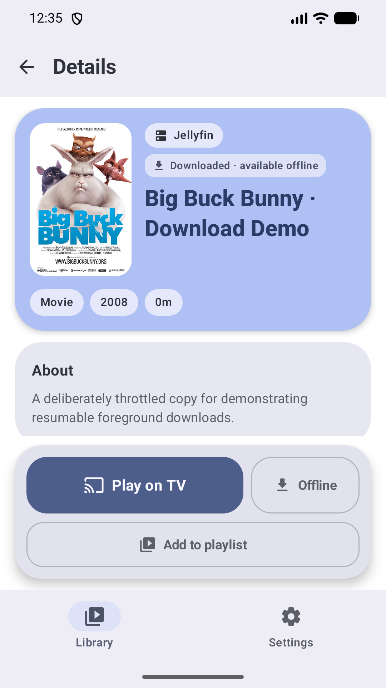

01
Your source
Pick something to watch
Browse Jellyfin, downloads, or video files already on your phone.
Android 14+ · Cast + DLNA
Stream Jellyfin and local video to your TV—without handing your server credentials to the biggest screen in the room.
Source available · No ads · No account required

A deliberately simple route
Stream Ferry makes your phone the intentional media gateway. The TV sees a temporary phone-hosted stream—not your Jellyfin address or access token.
Your source
Browse Jellyfin, downloads, or video files already on your phone.
Your phone
The phone opens the source and serves a short-lived, high-entropy stream on your LAN.
Your screen
Cast and DLNA playback stay controllable from one Now Playing screen.
Captured from the real app
These screens come straight from Stream Ferry running on Android. From a privacy-first welcome to local files, playback preferences, and offline copies, what you see is what you install.






Captured from Stream Ferry 0.6.0 on an Android 16 emulator. The demo library uses Big Buck Bunny and its poster under CC BY 3.0; no app UI was recreated for this page.
Built for the whole crossing
Browse, route, recover, and control playback without teaching every television how to reach your server.
Private by design
Tokens and server details remain on your phone. Stream Ferry has no ads, developer-run analytics, telemetry backend, or developer-operated cloud service.
Smart routing
Stream Ferry finds the best route and can recover through a compatible fallback without turning playback into a protocol lesson.
Ready offline
Download an original or compatible MP4, then cast it from app-private storage without the server.
One control deck
Resume across launches, autoplay the next episode, adjust TV volume, and recover from a dropped connection.
Local video, too
Choose individual files or folders with Android’s system picker. Full-library access stays optional.
A short privacy story
No developer database. No behavioral profile. No silent crash uploads. Playback data goes only where the feature requires it; Google’s Cast SDK separately sends anonymous Cast interaction and app/device metadata to Google.
Read the privacy policyMade for modern Android
Stream Ferry supports Android 14 and newer. It connects to Jellyfin, Google Cast receivers, and many DLNA smart TVs on the same Wi‑Fi or LAN.
The next crossing is ready
Download the latest signed APK from GitHub Releases.
Android 14+ · Source available under PolyForm Noncommercial 1.0.0